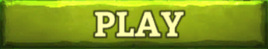

Kingsroad bemutatása
Véleményem szerint a Kingsroad a legjobb böngészős RPG játék. Ez az amit már számtalanszor kezdtem el és hagytam abba valamilyen ok miatt, azonban mindig visszatérek hozzá. Így volt ez pár hónappal ezelőtt is, mikor egy új játékot kerestem, hogy kipróbálhassam, és ismét belefutottam a Kingsroad-ba. Először túl is léptem rajta azt gondolva, hogy minek kezdjek bele megint, hiszen már rengetegszer játszottam vele. Olyan RPG után kutattam amit lehet böngészőben is játszani és természetesen muliplayer-es. Sok jobbnál-jobbnál játékot kipróbáltam már, de mindegyiket abbahagytam, mert olyan játékosok játszottak vele akikkel nem lehetett csapatban dolgozni.
Nem azt mondom, hogy a Kingsroad-ban nincsen olyan játékos aki csak hátráltatna téged, de vannak azért olyanok is, akik nagyon segítőkészek. Ez a szerepjáték angol nyelvű, tehát akár még az angol tudásodat is fejlesztheted vele, azáltál, hogy a többi felhasználóval kommunkiálsz, hiszen a legtöbb játékos angol. Csekély számmal de találhatók magyarok is, én is egy ilyen céhnek vagyok a tagja, aminek a két alapítója nagyon segítőkész, mindig a rendelkezésemre állnak ha valamiben elakadtam. Ez egy Hack and Slash játék mikrotranzakciókkal, tehát nem muszáj pénzt költened rá, hogy te legyél a legjobb, minden beszerezhető a játékon belül.
Végül mégis visszatértem a Kingsroad hírdetéséhez és mivel nem találtam olyan játékot ami felkeltette volna az érdeklődésemet, úgy döntöttem, hogy ismét belevágok. Ezzel mindig a testvéremmel játszottuk és pár hónappal ezelőtt ismét ketten kezdtünk neki. A bevezető pálya olyan volt mint régen, itt egy harcos karakterrel kell legyőzni az ellenfeleket és a végén lévő főgonoszt. Ezután jutunk el a fővárosba, ahol lehetőségünk van 3 féle karakater közül választani: harcos, íjász, varázsló. Azért is szeretem ezt a játékot, mert ha esetleg meguntuk, hogy az egyik karaktertípussal játszunk nagyon könnyen átválthatunk, szinte egy kattintással a másikra, így kiélvezhetjük a többi típus előnyeit is. Én mint mindig az íjászt választottam, de mikor már kezdtem belemerülni a játékba arra lettem figyelmes, hogy nagyon sok változás tötént, ami eddig nem volt.
Először teljesen összezavarodtam, mert szinte teljesen megváltozott minden, amire emlékeztem, hogy hol található a játékban az már nem ott volt és a játékmenet is megváltozott. A képességeket fel lehet erősíteni sok különböző rúnával, ami sokkal erősebbé teszi azt és nagyon érdekes effecteket produkál, sokkal élvezetesebbé teszi a játékot. Lehetőségünk van különböző ruhákba öltöztetni a karakterünket, a mostani ünnepek során egy télapó jelmezt lehetett kapni.
Ha szeretnénk gyorsan fejlődni akkor érdemes csapatban elkezdeni a játékot, ugyanis a Kingsroadban lehetőség van 3 fős csapatban teljesíteni a küldetéseket, ezzel megkönnyítve a játékosok küzdelmét az ellenséggel szemben. Ha egy csoportban játszatok érdemes más-más karaktertípust választani, így nem lesz egyoldalú a játék, hiszen ha például csak harcost választatok akkor hiányozni fog a csapatból az erő, mivel a harcos egy védekező karakter és nem lesztek képesek távolról megütközni ez elleféllel. Ezért ajánlom, hogy kezdés előtt mindenki válassza ki a maga karakterét amivel valamilyen úton segítheti a csapata előrehaladását.
A Kinsgroad-ban lehetőség van nem csak a gépi ellenfelek ellen harcolni, hanem akár más felhasználókkal is összemérni a tudásodat. Erre szolgál a PvP pálya, ahhoz, hogy ide eljuthass szükséged lesz 10 db Coliseum Tokenre. Veled együtt összesen 4 játékost teleportál ide a játék, hogy megküzdjetek életre-halálra. 2 percig tart egy küzdelem, de nem kell aggódnod amiatt, hogy esetleg meghaltál, mert pár másodperc múlva újrafogsz éledni és folytathatod a csatát. Az a felhasználó nyer aki a legtöbb pontot éri el azáltal, hogy a többi játékos halálát okozza.
Röviden ez lenne a Kingsroad bemutatása, mint mondtam ez az a játék amit lehetetlen nem otthagyni, mindig visszahív, hogy folytassam a harcot. Ebben megtaláltam mindent amit egy játék kínálhat nekem, és bátran ajánlom mindenkinek kortól függetlenül, hogy egyszer leglább próbálja ki, nem fogtok benne csalódni. Azt fogjátok észrevenni egy idő után, hogy teljesen beszippantott a játék, és nem telhet el úgy egy nap, hogy nem látogattatok el az oldalra.
